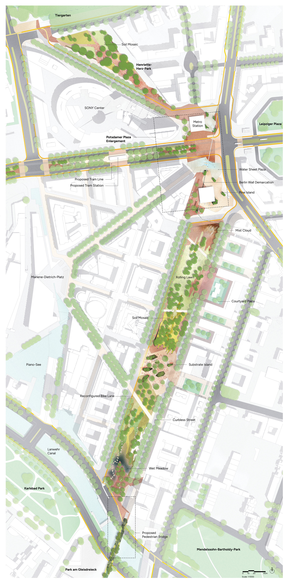

- Location
- Berlin, Germany
- Year
- 2026
- Type
- Landscape design
- Design team
- Yuehui Gong, Jiewen Hu, Zicheng (Kai) Zhao, Kwan Yu (Lilian) Chung

The Latent Ground: Restaging Tilla-Durieux Park for Ecological Emergence
Tilla-Durieux-Park becomes an unfinished ecological performance: a landscape shaped by changing soils, wind, water, and succession, opening new possibilities for public life and non-human species.
Project details
Project statement
Tilla-Durieux-Park is reimagined not as a preserved object or a generic climate-adaptive landscape, but as an unfinished ecological performance. The original 450-metre grass sculpture, once defined by a fixed tilted plane, is transformed into an environmental instrument shaped by succession, dispersal, wind, water, maintenance, and public occupation.
At the district scale, ecological continuity is understood as a dispersal field. Seeds, pollen, insects, birds, and water move among three ecological hotspots: Potsdamer Platz, Tiergarten, and the Landwehr Canal. A future tram allows excess road space at Potsdamer Platz to be converted into planted, pedestrian, and cycling infrastructure, while Tiergarten and the canal act as contrasting reservoirs of woodland, meadow, wetland, and ruderal species. Henriette-Herz-Park and Tilla-Durieux-Park become receiving and mixing grounds where these ecologies overlap under different soil and moisture conditions.
Mobility is integrated into this framework. The tram restructures streets as civic and ecological spaces, while a new bridge connects Park am Gleisdreieck to the site through accessible human routes and quieter passages for non-human species.
At the site scale, the park’s original topography is inverted, creating lower, wetter ends and a higher, drier center. The depressions collect rainwater, receive wind and seeds, support mist and evaporative cooling, and strengthen connections to surrounding urban and canal landscapes. The central ridge contains varied sandy, rubble-rich, compacted, and woodland-edge soils that enable unpredictable plant succession rather than fixed planting beds.
Moving south, formal definition decreases as ecological openness increases. Preservation is therefore reframed as active negotiation. Through changing soils, wind-driven dispersal, disturbance, and managed succession, the park retains its sculptural and historical identity while remaining deliberately open to ecological and social change. Ruderal vegetation makes Berlin’s cycles of construction, destruction, abandonment, and control materially visible, allowing history to persist through living processes rather than static form.
